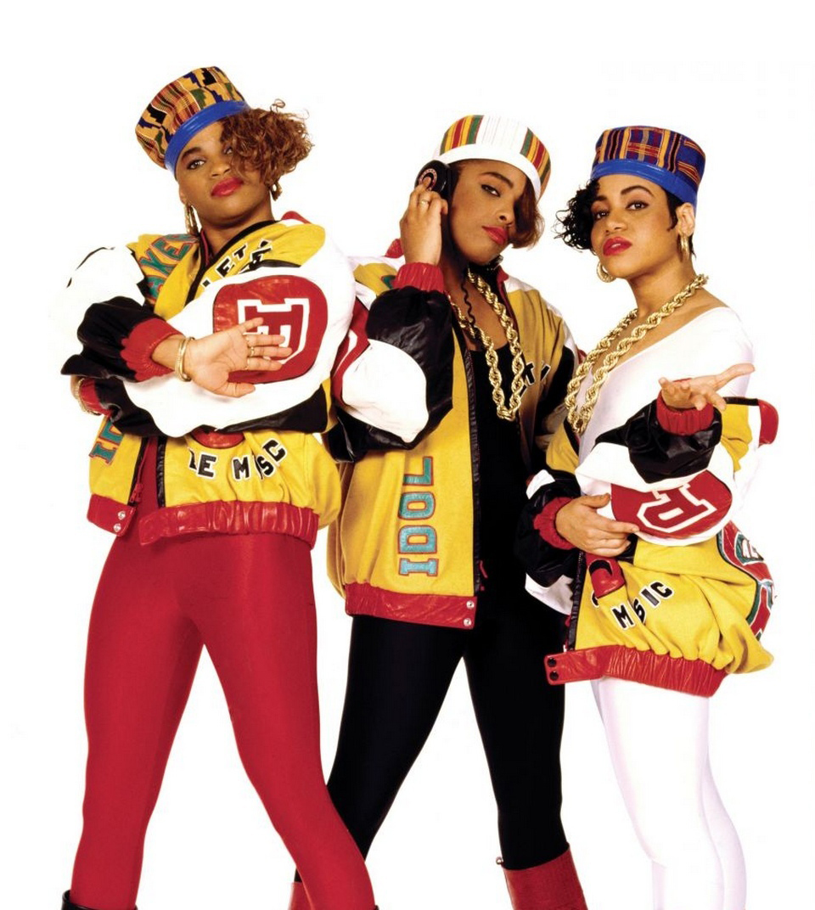
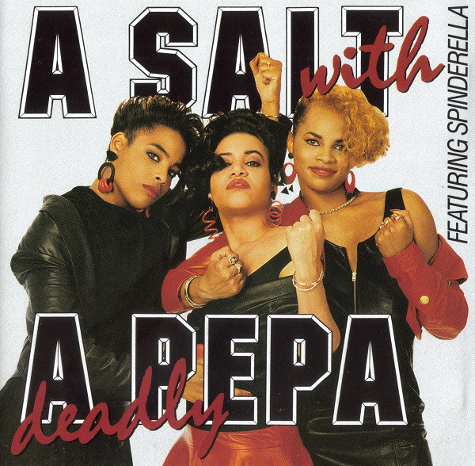
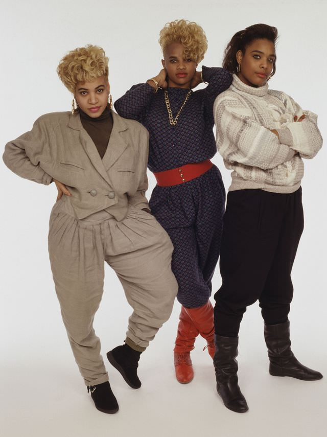

Salt-N-Pepa
BLACK FEMALE ICONS
HISTORY:
FORMATION OF
SALT-N-PEPA

HUFFINGTON POST | DANA OLIVER
Cheryl and Sandra both New York City natives, met while studying Nursing at Queensborough Community College. (wiki). The two became close friends, and soon after meeting, met Hurby “Luv Bug Azor", who was studying record production at the Center of Media Arts at the time. The trio soon produced the single “The Showstoppa”. This would be the first single from the infamous NYC chart-topping group group, Salt-N-Pepa.

MICHAEL OCHS ARCHIVES/GETTY IMAGES
After the single release, the goru signed to Next Plateau Entertainment, now known as Next Plateau Records, releasing their debut album Hot, Cool & Vicious in 1986. The following year, 15 year old DJ Deidra “Spinderella” Roper was recruited into the group. Coming into the very male heavy world of 90’s Hip Hop, these three ladies, with the management of Hurby Azor, Salt’s then boyfriend, would come to be known as the showstopping Salt-N-Pepa. They would make history as one of the first female rap groups ever; the “first ladies” of rap.
SEX POSITIVITY
IN MUSIC
PHOTO FROM IMGUR
“We’re feminists. We’re doing something that only guys are expected to do and doin’ it right!.” said Salt. “I don’t like the fact that there are so few women in rap.”
With the release of songs such as "Tramp" from their debut album Hot, Cool, & Vicious They redefined the word tramp, which prior to the song, would be used to refer to women as “loose” or “sexually promiscuoius”. The group redefined it to describe the aggressive means by which men often approach and hit on women in nightclubs (icon). This does more than make a catchy commercially successful song, it offers a cirtique of the double standard that exists for men and women in terms of sexual expression and engagement in sexual acts. It radically reclaims the once derogatory term, transfroming into something to hold men accountable for patriarchy endoresed abuse and harassment of omen.
Rather than cower in the corner on the subject of sex, Salt-N-Pepa embraced female sexuality and women's issues.
PHOTO FROM GETTY IMAGES
Salt N Pepa were particularly important in commemoration of the 90’s hip hop aesthetic, as they were a large part in shaping the culture. “By focusing on female empowerment and positive female sexuality, and placing women’s issues in the forefront, the group garnered a strong female following” (Hess, 2007).
LEGACY
OF THE DUO


TUMBLR | @QUEENSOFRAP
The group racked in commercial sales in its formative years, with their debut and 3rd albums Hot, Cool, & Vicious acquiring platinum status, their second album A Salt with a Deadly Pepa reaching gold status, and reaching #1 of various RnB and Hip Hop charts. Not to mention several Grammy nominations, and one Grammy win. Songs such as “Let’s Talk About Sex” and “Push It” would shape the legacy the group would leave, as a femme rap group making art about feminity and sex unapoloogetically.
In terms of today’s female rap scene, the contenders in the game have tripled from the small pool of “OG” female rappers in the 80’s and 90’s. Rappers like Megan Thee Stallion, Rico Nasty, CupcakKe, can be seen channeling the sexy, colorful, and bold aesthetic and sound of the original Salt N Pepa. Black women in Rap, such as the trio of Salt N Pepa, hae laid the groundwork for current powerhouses to unapollogetically make art about sex, intimacy, and love and hold their own on the mic.

BET.COM | LADIES' NIGHT
SOURCES
- http://thesource.com/2016/03/10/first-ladies-of-rap-salt-n-pepa/
- https://en.wikipedia.org/wiki/Salt-N-Pepa
- https://en.wikipedia.org/wiki/Very_Necessary
- https://www.phoenixnewtimes.com/music/salt-n-pepa-discuss-their-career-and-legacy-as-hip-hops-matriarchs-7420797
- https://www.udiscovermusic.com/stories/salt-n-pepa-very-necessary-album/
- Hess, M. (2007). Icons of hip hop. an encyclopedia of the movement, music, and culture. Westport, CT: Greenwood Press.